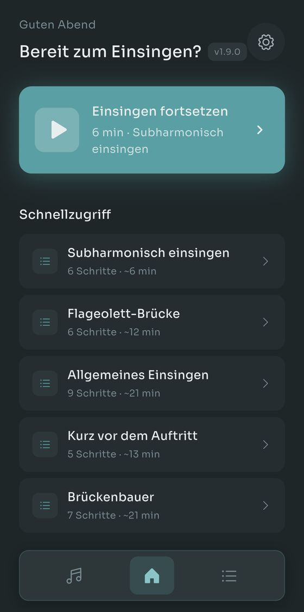
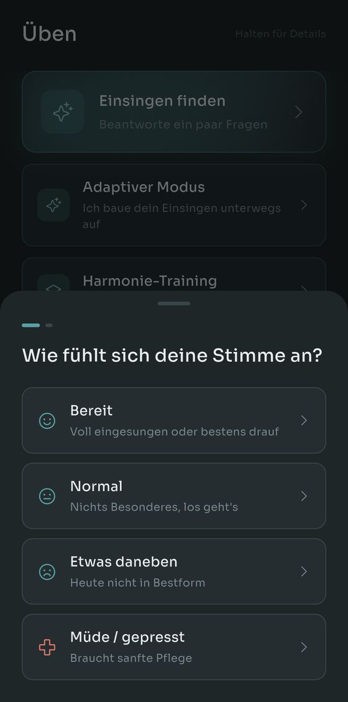
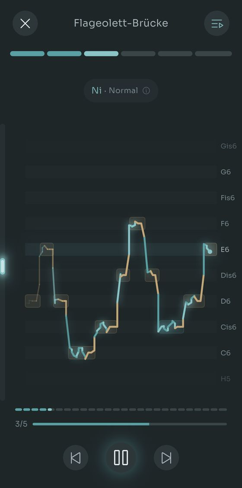
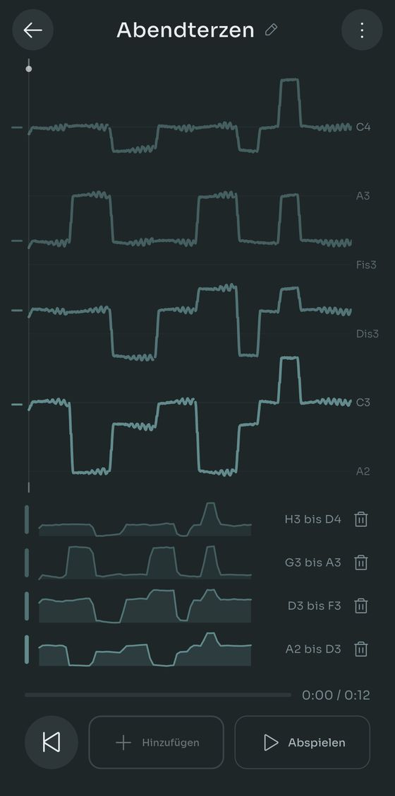
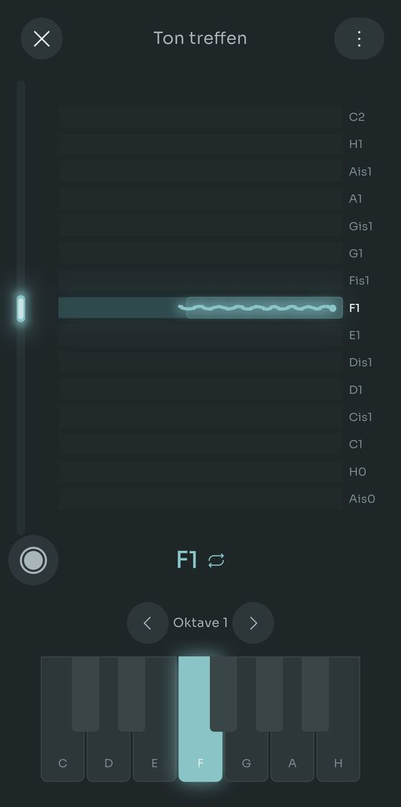
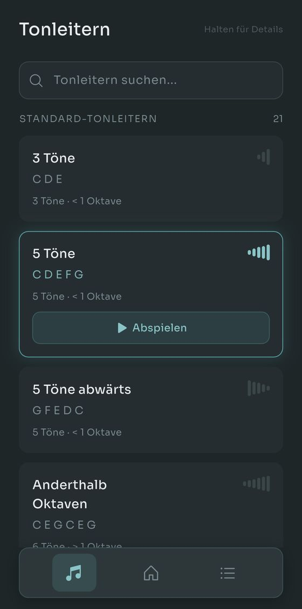

Scalita spielt Tonleitern auf einem Salamander Grand Piano, während du mitsingst. Du stellst deinen Stimmumfang einmal ein, und jede Übung transponiert sich passend dazu.
Einfache Skalen. Echtes Klavier. Kein Quatsch.






Nichts vorher zu lesen, nichts anzumelden.
Sing ins Telefon, und Scalita findet deinen tiefsten und deinen höchsten Ton. Oder wähl eine Stimmlage und überspring den Schritt.
21 Tonleitern und 14 Routinen sind dabei. Unsicher? Beantworte zwei Fragen, und Finde mein Einsingen wählt für dich.
Das Klavier spielt die Figur, geht einen Halbton höher und spielt sie wieder, immer innerhalb deines eingestellten Umfangs.
Echte Salamander-Grand-Piano-Samples über alle 88 Tasten, von A0 bis C8. Egal wie tief oder hoch du singst, es gibt einen aufgenommenen Ton dafür.
Nimm eine Linie auf. Sing eine zweite darüber und hör dir beide zusammen an. Bis zu vier Stimmen, und eine Stimme kann eine Mikrofonaufnahme sein, eine Datei, die du schon hattest, oder eine Tonleiter, die die App spielt.
Aufnehmen ist kostenlos. Vier Stimmen auch, und die Länge auch. Pro kommt erst ins Spiel, wenn du mehr als eine Harmonie gleichzeitig behalten willst, und du kannst jederzeit eine weitere vollständig bauen und stattdessen diese behalten.
Der Rest der App, in vier Teilen. Nichts davon steht dir am ersten Tag im Weg.
Finde mein Einsingen fragt, wie sich deine Stimme heute anfühlt und woran du arbeiten willst, und wählt dann Routine und Tempo. Der Adaptive Modus lässt den Plan ganz weg: nach jeder Übung sagst du, wie es lief, und die nächste passt sich an. Sag ihm, dass du zehn Minuten hast, und er teilt die ganze Einheit so ein, dass sie hineinpasst, Abkühlen inklusive.
Setz Kopfhörer auf, und eine Spur in Echtzeit zeigt, wo du auf jedem Ton landest, grün wenn es sitzt und bernsteinfarben wenn du wegdriftest. Das Tontreffen verengt das auf eine Taste nach der anderen, und es behält jetzt deine Takes: den Ton, die Tonhöhenlinie und was die Tastatur gerade tat, damit du nächste Woche einen öffnen und hören kannst, ob sich etwas bewegt hat.
Die meisten Einsing-Apps hören bei Brust- und Kopfstimme auf. Stell für jedes Register, das du wirklich benutzt, einen eigenen Umfang ein, und drei eigene Routinen werden frei: das Rasseln unter deiner Bruststimme, der Flötenton über deinem Umfang und die Pfeifstimme noch darüber. Trag auch deinen Registerbruch ein, dann bauen sich die Übungen darum herum.
Bau Tonleitern und Routinen von Grund auf: Intervalle, Silben, Tempi, Startton. Oder sing oder spiel eine Figur in die Tonleiter-Erkennung, und sie schreibt die Töne für dich auf. Für 1.9.0 neu gebaut, braucht sie bei echtem Gesang etwa halb so viele Korrekturen, und sie markiert die Töne, bei denen es auf der Kippe stand, damit du weißt, wo du hinschauen musst.
Jede Funktion läuft kostenlos. Pro hebt die Grenzen dafür auf, wie viel du behältst.
Eine Zahlung, kein Abo. Die Preise in den einzelnen Ländern legt Google Play fest.
Kostenlos bei Google Play. Kein Konto, keine Werbung, nichts zu kündigen.
Vorerst nur Android. Auf Deutsch, Englisch, Spanisch, Französisch und Portugiesisch.